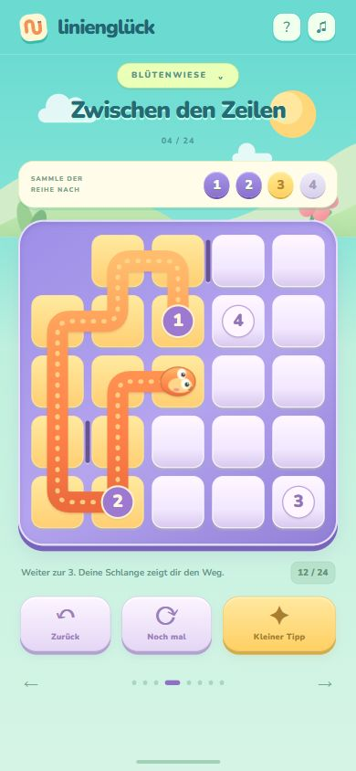
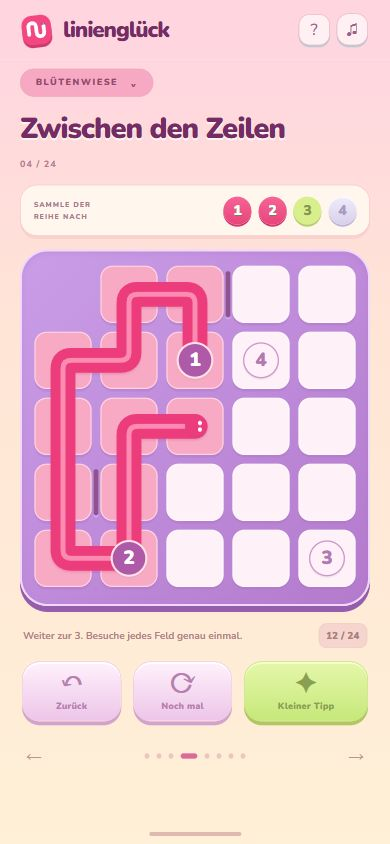
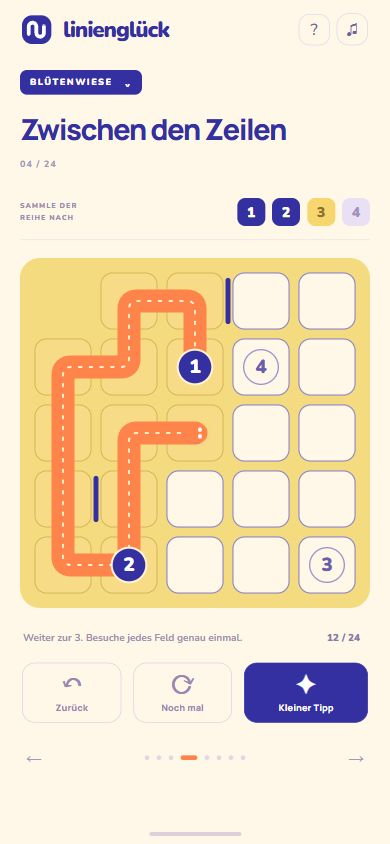
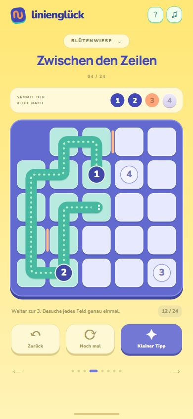
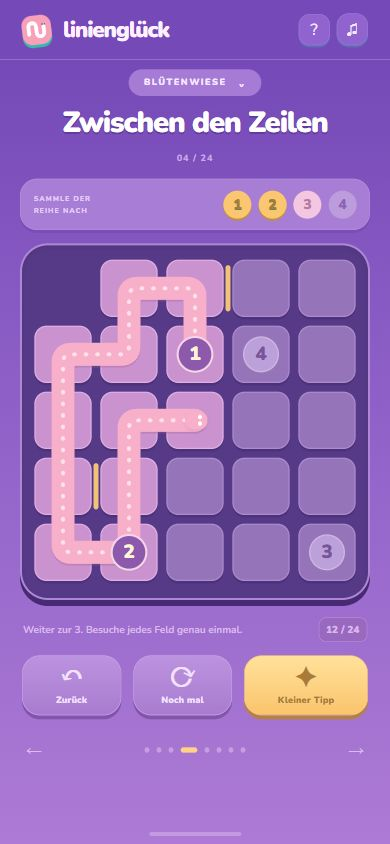
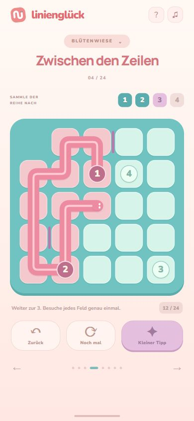

01Kleine Schlange


Türkis · Violett · Orange
Plastische Spielsteine und Schlange
Gleiches Rätsel · gleicher Spielstand · tatsächliche Oberflächen

Türkis · Violett · Orange
Plastische Spielsteine und Schlange

Pink · Pflaume · Limette
Weiche, farbige Linie

Creme · Kobalt · Orange
Flache Flächen und klare Konturen

Zitrone · Blau · Mint
Leuchtendes Spielfeld und weiche Tiefe

Violett · Rosa · Honig
Dunkleres Spielfeld, helle Spielspur

Koralle · Türkis · Mauve
Rundere Formen und leichte Oberfläche